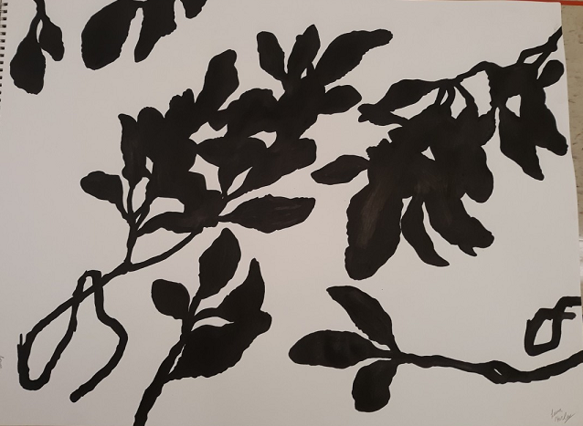
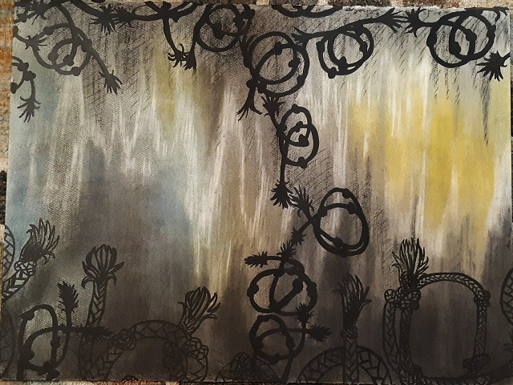

Traditional Work

Hello! My name is Laura Hurley! I'm pursuing a Creative Technologies major at Illinois State University (ISU). I am an aspiring concept artist and character designer! I am most experienced in traditional mediums such as pencil and paper. For examples of my works in this medium, please look to the images below.


Traditional Work - Rates
My main mediums include pencil and ink pens on paper, and Artist's Loft markers. Recently, I've been experimenting with other mediums, such as charcoal and pastels!
- Sketch - $10
- Inking - $5
- Color - $5 (Markers are Default; Specify if Other Medium is Desired)
- Shipping - Dependent on Region of Residence
Alternative Mediums to Graphite
Marker
Additional $2 for Marker

Ink Wash
Additional $6 for Ink Wash

India Ink
Additional $5 for India Ink (Ink Only; No Ink Wash)
Pastel
Additional $5 for Pastels
Digital Work - Rates
- Sketch - $15
- Inking/Linework - $10
- Color - $5 (Markers are Default; Specify if Other Medium is Desired)
- Shipping - Dependent on Region of Residence
Interested in Commissioning?
Prices are negotiable. I reserve the right to refuse any commission for whatever reason.
Please direct payments to my Paypal: